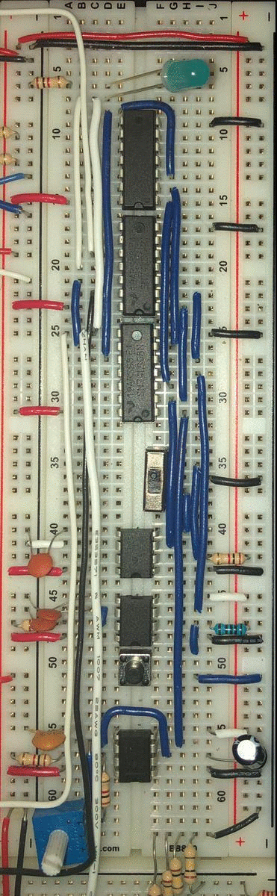
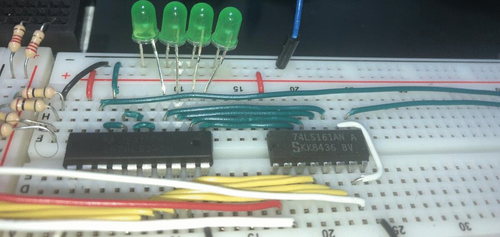
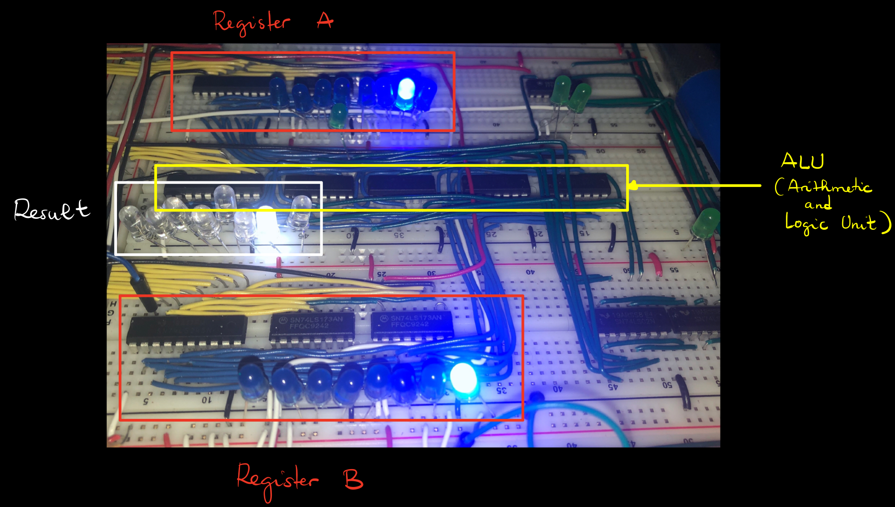
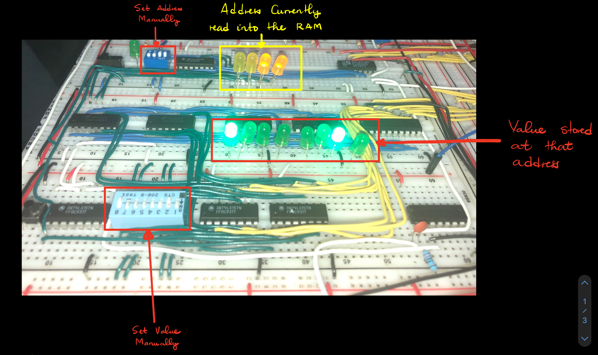
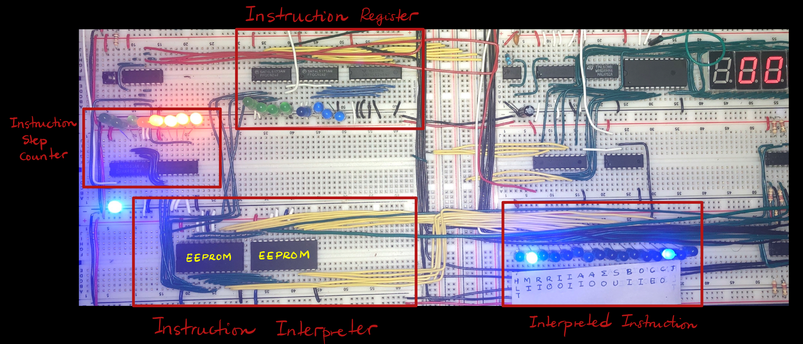
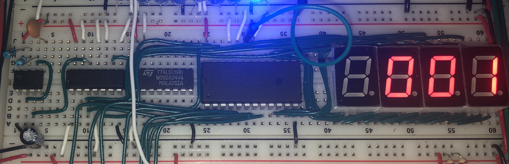
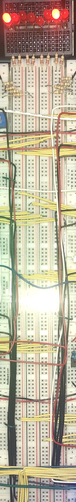
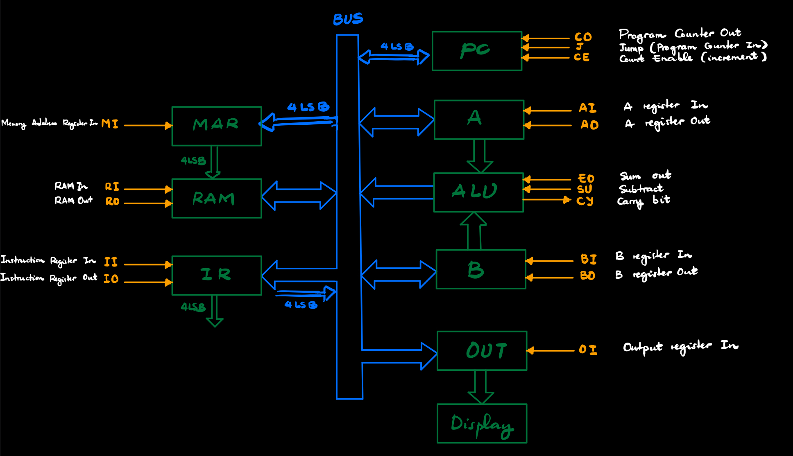

This is an 8 bit computer currently running a program thaat computes Fibonacci numbers.
Starting from transistors, resistors, ICs, and other basic electronic components, I build a 8-bit computer on a breadboard! In this case, 8 bits means:
The numbers used are at most 8-bits (0 to 255 if using positive integers only, -128 to 127 if using signed integers)
The values stored in the RAM are 8 bits (but the addresses are 4 in length, which allows a total of 16 possible memory locations)
The instructions excecuted by the computer are 8-bits long as well
After completing the project, the possible operations were: loading and saving into memory , add and subtract, loop and display. Swipe below to see each part of the computer and its description.
This project was inspired by Ben Eater's instructional videos!

Clock Module
The role of the clock module is to provide a "pulse" to which each instruction will wait for before being excecuted. Without the clock, each instruction would be excecuted on its own time, which would create a
real mess! Imagine adding two numbers before the computer had the time to get those numbers from memory!
Program Counter

The program counter does exactly what you think: It counts. By itself, all it does is count from 0 to 15 (in our case). However, once connected to the rest of the computer, we can use it for loops.
We can also excecute multiple instructions located into the RAM, by stepping through them one by one with the program counter.
ALU (Arithmetic and Logic Unit)

This is the brain of the computer, the part that does the math. It comes with two registers, which hold the current values being added and/or subtracted, and the ALU itself which
performs the operations.
RAM (Random Access Memory)

Wether it's instructions or numbers, the RAM saves it all. It's basically a giant array of flip-flops (circuits that save one bit of memory). In our case, it is a 16x8 array: 16 possible memory locations and 8 bits per location. The reason why is it called Random Access is because each of those memory locations is readable and editable at anytime (Unless you turn off the computer, which will erase your RAM
contents.)
This is also where the computer is programmed. By toggling the address and value switches, we enter instructions and numbers into specific addresses of the RAM. The program counter will then step through each of these intructions one by one, and send
it to the control logic to interpret and excecute the instruction.
Control Signal

This is the part of the computer that reads and interprets intructions saved in the RAM. For example, if we have the binary 01001111 (79 in decimal) at memory location 0110 (6 in decimal), the control signal is
the one that determines if we are actually talking about the number 79, or if 01001111 means something else, perhaps "store the result of the addition into the RAM". The control signal is preprogrammed (using and EEPROM) to
figure that out.
Display

This takes a binary input coming from the bus an outputs a decimal.

Bus
This is the backbone of the computer. Every information goes through the bus. If a register in the ALU wants to access a number in the RAM, that number has to be sent to the bus by the RAM, then read from the bus
by the register; If the control signal wants to get the next instruction to be excecuted, the RAM has to send the binary version of the instruction into the bus, and the control signal has to read that instrcution from the
bus. Of course, we have to make sure that only one information is sent through the bus at the time.
Architecture

This is the final architecture of the breadboard computer.
The orange signals represent the elementary instructions provided by the IC chips. We use those instructions to build more complex ones, such as addition, display, etc. We
then use these complex instructions to write programs!
The green boxes are the different modules that make up this computer.
The blue boxes and arrows represent the bus and all its connections. 4LSB stands for
4 least significant bits, and is used for modules that only send 4 bits to the bus, instead of 8. (The program counter and memory address only count up to 15, so they only require 4 bits.)